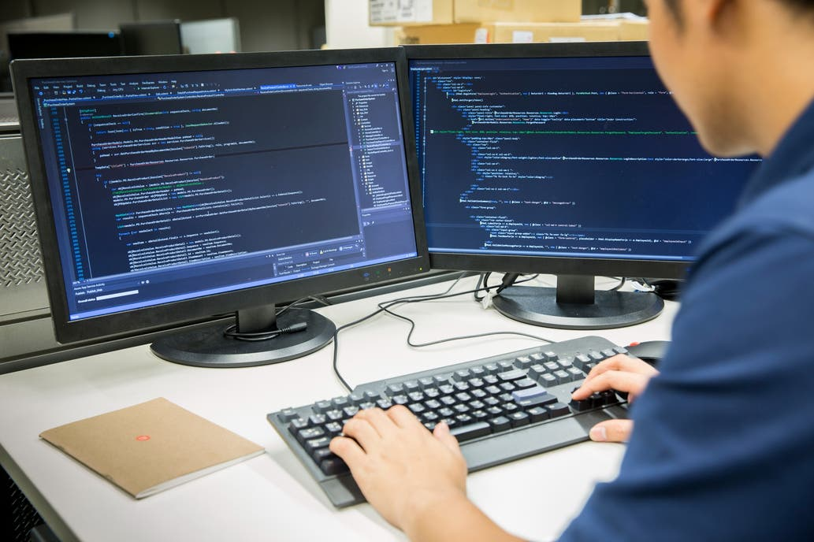

La FACET Diario
Economía
Tecnología
Cual es el salario promedio de un
programador en la Argentina en Septiembre
de 2019.

Trabajos 4.0: el 30% de los puestos en
tecnología de la Argentina quedarán
vacantes en 2020.